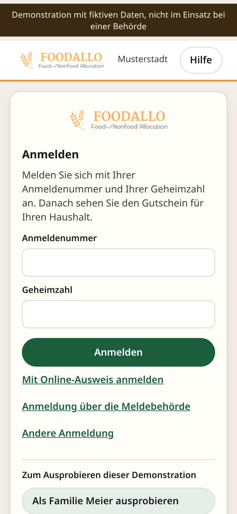

Customer App · für Bürgerinnen und Bürger
Der Gutschein für den Haushalt – auf dem Handy.
Die Customer App zeigt, wie viel ein Haushalt in der laufenden Woche abholen kann, was schon abgeholt wurde und in welchen Geschäften. Sie läuft im Browser und lässt sich wie eine App auf dem Startbildschirm ablegen.
Demonstration mit fiktiven Daten, nicht im Einsatz bei einer Behörde
So funktioniert es
- Anmelden – mit Anmeldenummer und Geheimzahl oder über die Meldebehörde.
- Bestätigung abwarten – die Meldebehörde prüft die Identität. Bis dahin zeigt die App einen Wartehinweis.
- Gutschein sehen – Mengen für den ganzen Haushalt und eine Woche (Montag bis Sonntag), dazu „bereits abgeholt“ und „es bleibt noch“.
- Abholen – jede bestätigte Person des Haushalts kann in einem der aufgeführten Geschäfte abholen. Gebucht wird im Geschäft, nicht in der App.
- Besondere Fälle – Trinkwasser gibt es zusätzlich nur bei einer gemeldeten Störung der Wasserversorgung. Insulin gibt es nur in der Apotheke gegen gültiges Rezept.
Beta ausprobieren
Testzugang ohne Eingabe: auf dem Anmeldebildschirm „Als Familie Meier ausprobieren“ wählen.
Die Beta speichert nur im eigenen Browser. Es gibt keine Verbindung zu einem echten Melderegister.
Bildschirme aus der Beta


Die GrundregelZugeteilt wird das Kleinste aus Bedarf, Grundquote und Restbestand.